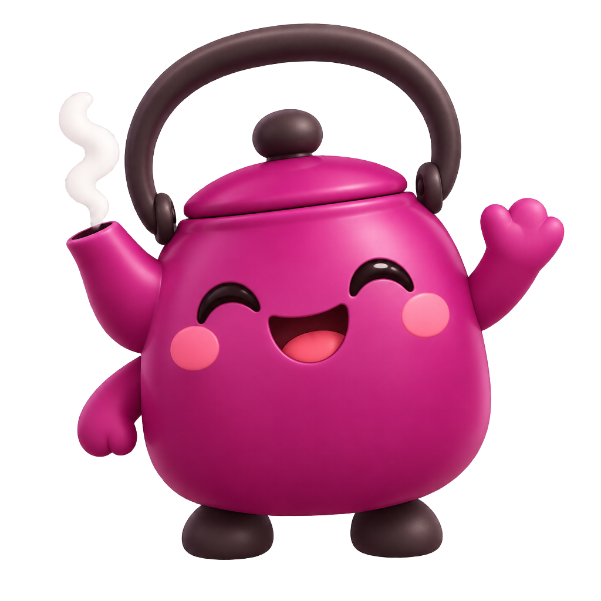
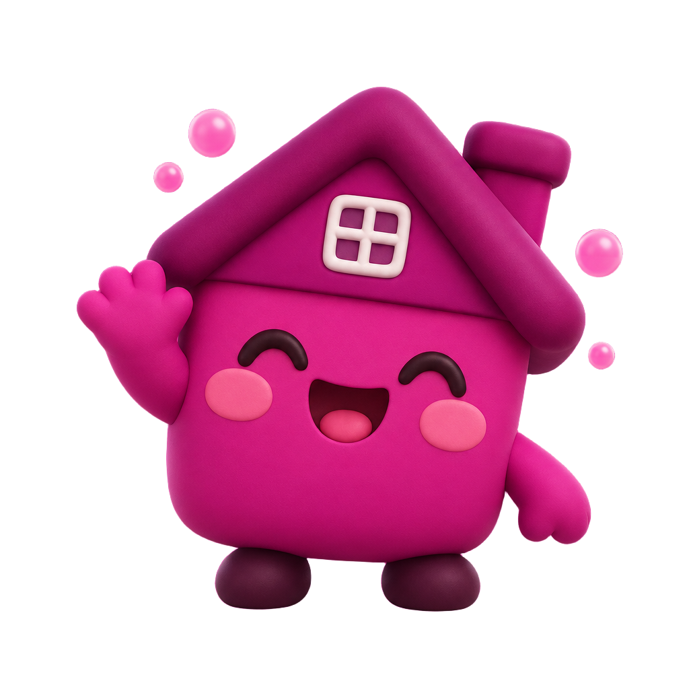

Три варіанти в м'якому 3D-стилі (згенеровано в Masko). Фон прозорий — персонаж стає на будь-який фон сайту. Обраного маскота ми «оживимо»: емоції (радіє, думає, шукає, розгублений) та короткі анімації для сайту.

Емальований чайник
Одразу зрозуміло, що це посуд. Теплий, «домашній» образ, фірмовий колір.

Будиночок з логотипу Benson
Найсильніший зв'язок з брендом — прямо з логотипу: віконце, бульбашки, фірмовий колір.
Каструля-шеф з гарнітурою
Виглядає як консультант «на зв'язку» — найкраще пасує до ролі AI-помічника. Підходить і для HoReCa.
→ Бенсі: анімації та як він виглядає на сайті